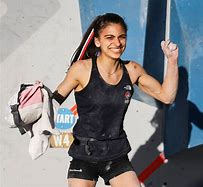

Lubię wspinaczkę skałkową. Nie wiem, czy dam radę wypocić z siebie tyle słów, ale mogę spróbować. Wspinaczka dzieli się na kategorie. Istnieje bouldering, wpinaczka z asekuracją oddolną i asekuracja na tak zwaną "wędkę".
Asekuracja oddolna polega na tym, że wspinacz jest przypięty do jednego końca liny i wchodąc na górę wpina się w kolejne karabinki na ścianie. Na dole stoi asekurujący z przyrządem, przez który przechodzi drugi koniec liny. Tę metodę najczęściej stosuje się na pochyłych ścianach. aby człowieka za bardzo nie odrzuciło od ściany, gdy spadnie, lub po prostu podczas wspinaczki za zewnątrz, na prawdziwych skałach.
Drugą metodą asekuracji jest asekuracja "na wędkę". Polega ona na tym, że lina jest przewleczona przez jeden karabinek na samej górze ściany. Ja jednej jej końcu znajduje się wspinacz, a na drugim asekurujący. Spośród przyrządów asekuracyjnych wyróżniamy między innymi gri-gri i kubek. Gri-gri jest w połowie zautomatyzowane, lina blokuje się sama. Jest też speed climbing, który polega, jak sama nazwa wskazuje, na jak najszybszym dotarciu na górę ściany. Mój rekord na dziewięcio-metrowej ścianie to 5.04s. Staram się zejść poniżej 5s.
Ja uprawiam bouldering, czyli wchodzę na niższe ściany, 4-5 metrowe, bez zabezpieczenia. Taki też rodzaj wspinaczki lubię oglądać w telewizji najbardziej. Najczęściej oglądam bouldering kobiet, w których występują między innymi Natalia Grossman, Brooke Rabatou, Oriane Bertone, Jessica Pilz, Oceania Mackenzie, Janja Garnbret, Miho Nonaka, czy Ai Mori. W boulderingu i we wspinaczce z asekuracją są różne skale trudności. Ja korzystam z jednej z najpopularniejszych, lecz nie najpopularniejszej, w której najprostrze drogi zaczynają się od oznaczenia 4a. Trudniejsze jest kolejno 4b, 4c, 5a, 5b, bc. Później, od szóstki w górę, skala nieco się zmienia. Jest kolejno 6a, 6a+, 6b, 6b+, 6c, 6c+, 7a, 7a+ itd. aż do około 9. Zdarzają się trudniejsze, ale są tak niewyobrażalnie wymagające, ze pojedynczy ludzie na świecie są wstanie je zrobić. Ja w tej chwili mówię, że jestem na poziome 6c+, ponieważ najtrudniejszy boulder jaki udało mi się zrobić miał oznaczenie 6c+. Nie jestem wstanie oczywiście zrobić wszystkich o takiej trudności, do tej pory zdarzyło mi się zrobić tylko jeden.
Uwielbiam ten sport, kocham to, że angażuje całe ciało, i że potrzebna jest do niego siła i sprawność całego ciała, np. rąk, nóg, brzucha (nogi są zaskakująco istotne!).